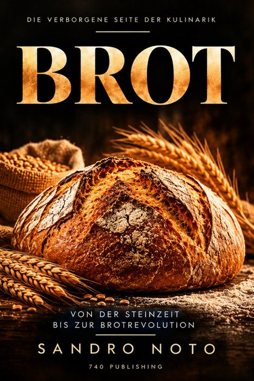

Sachbuch
Brot
Kulturgeschichte des Brotes
Reihe: Die verborgene Seite der Kulinarik · Band 3
Von den ersten Broten der Steinzeit bis zur industriellen Backrevolution: Sandro Noto erzählt die überraschende Geschichte hinter einem alltäglichen Lebensmittel, voller Mythen, Macht, Politik und Kultur. Band 3 der Reihe „Die verborgene Seite der Kulinarik“.
E-Book 8,49 €Taschenbuch 22,49 €Hardcover 29,99 €bald verfügbar
Erhältlich als E-Book & Taschenbuch · Hardcover: bald verfügbar
E-Book: ISBN 978-3-565896-65-3 · Taschenbuch: ISBN 978-3-565896-64-6 · Hardcover: ISBN 978-3-565906-55-0